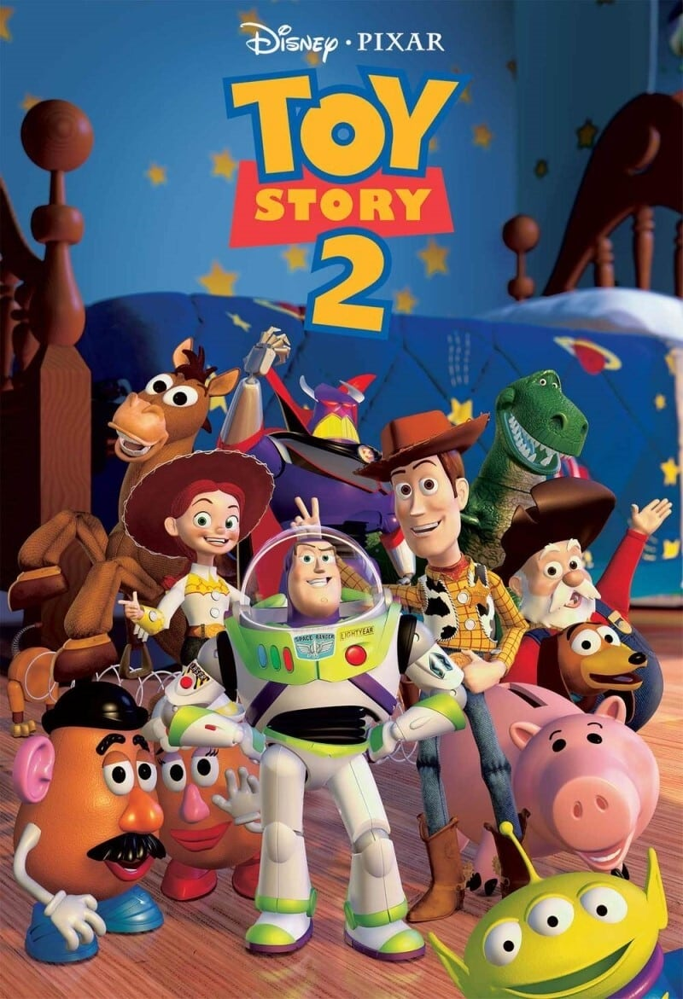
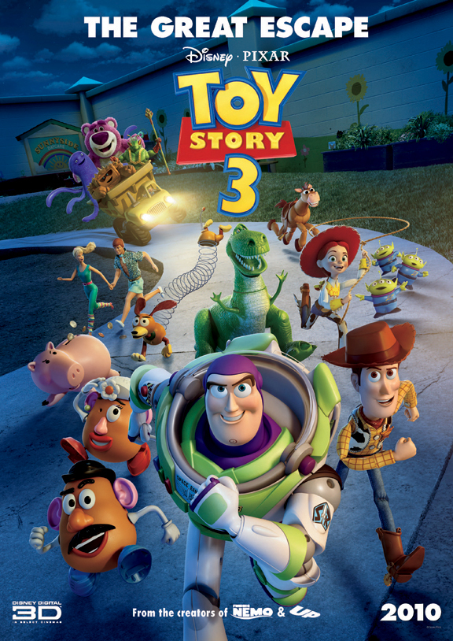
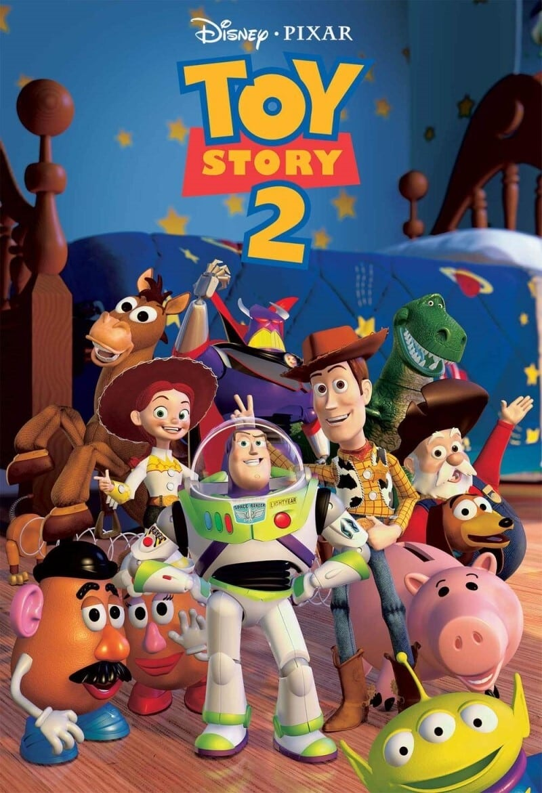
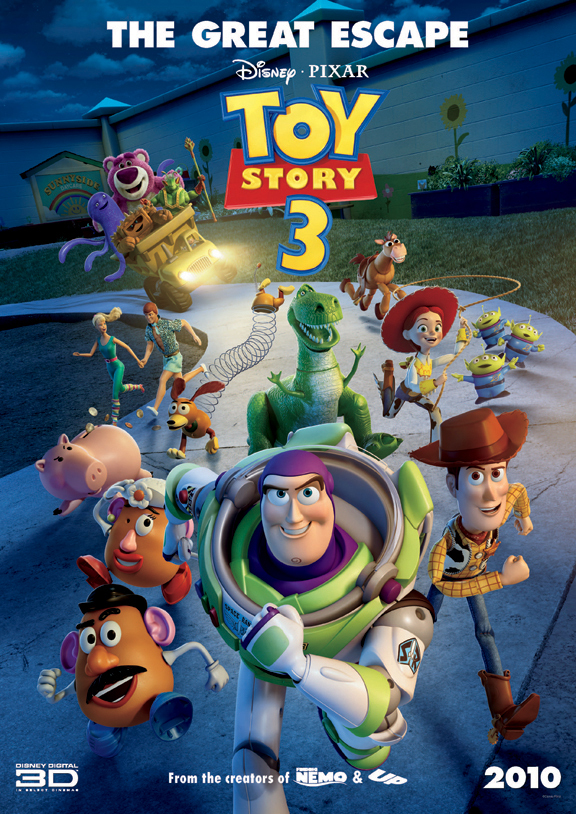
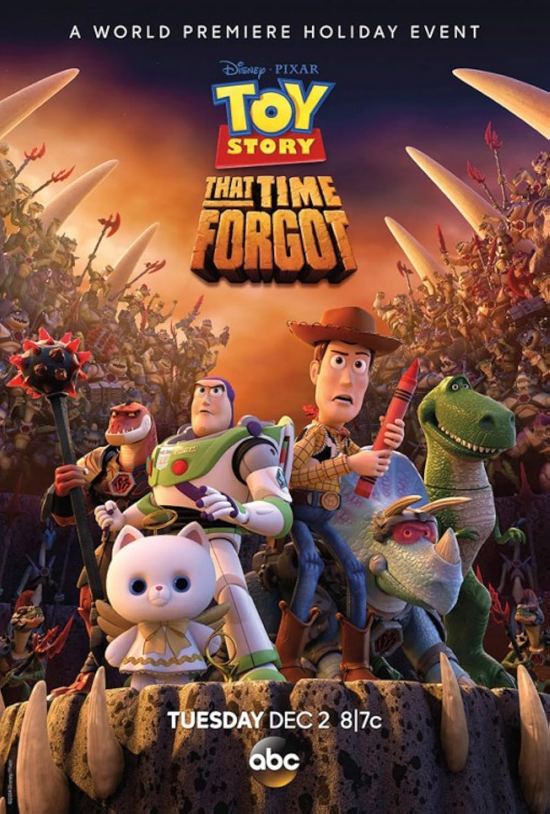
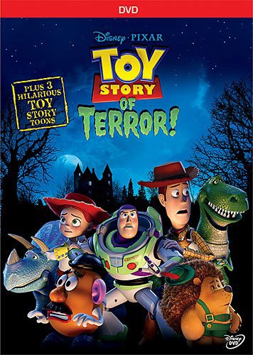
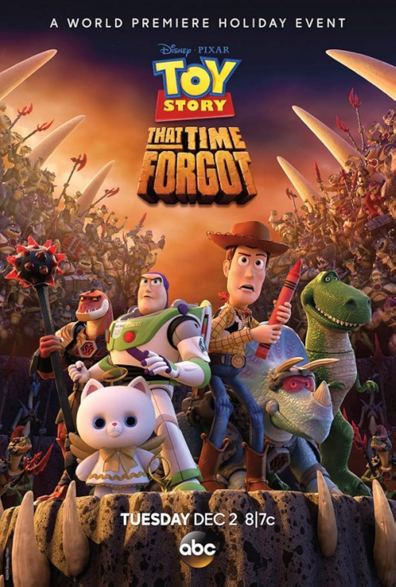
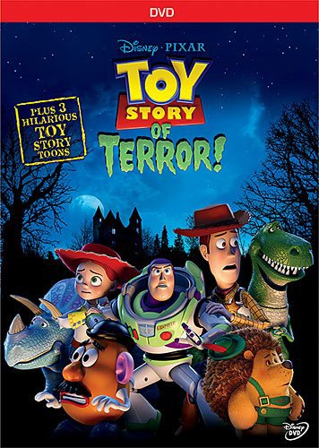

👋✨ Selamat Datang di Website Idola Saya 🎉💻
Selamat datang di Website Idola Saya, sumber informasi lengkap tentang idola dari berbagai bidang. Temukan data terbaru, tambahkan informasi idola favorit, dan bergabunglah dalam komunitas penggemar untuk berbagi pengalaman. Jelajahi lebih dalam dan jadikan website ini tempat utama Anda untuk segala hal tentang idola!
Deskripsi tentang Toy Story
Toy Story adalah film animasi 3D pertama di dunia yang diproduksi oleh Pixar Animation Studios dan dirilis oleh Walt Disney Pictures pada tahun 1995. Film ini disutradarai oleh John Lasseter dan mengikuti petualangan mainan-mainan yang hidup ketika manusia tidak melihat. Ceritanya berpusat pada dua karakter ikonik: Woody, seorang koboi boneka yang setia dan bijaksana, dan Buzz Lightyear, seorang action figure bertema luar angkasa yang awalnya tidak menyadari bahwa ia hanya mainan.
Serial ini terdiri dari beberapa sekuel populer seperti Toy Story 2 (1999), Toy Story 3 (2010), dan Toy Story 4 (2019), yang masing-masing menggali lebih dalam tentang hubungan antara mainan dan pemiliknya, serta makna persahabatan dan perpisahan. Dengan pesan-pesan emosional dan animasi revolusioner, Toy Story telah menjadi waralaba klasik yang dicintai banyak orang.
Saya menyukai Toy Story karena menghadirkan kisah persahabatan, kesetiaan, dan penerimaan dengan pesan mendalam. Hubungan Woody dan Buzz mengajarkan pentingnya kerja sama meski berbeda. Film ini juga membawa nostalgia masa kecil, di mana mainan menjadi teman berharga. Setiap kali menonton, saya selalu terharu dengan perjalanan karakter menghadapi perpisahan dan perubahan, seperti di Toy Story 3. Dengan humor yang segar dan animasi berkualitas, Toy Story bukan sekadar hiburan, tapi pengingat akan pentingnya kenangan dan menghargai setiap momen hidup.
Galeri
 



 


